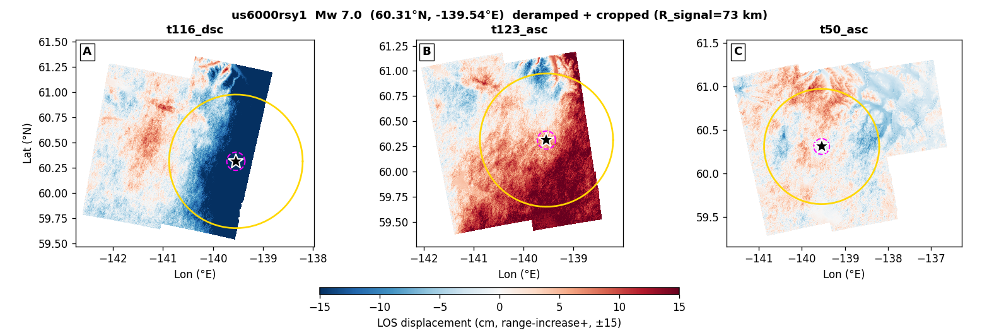
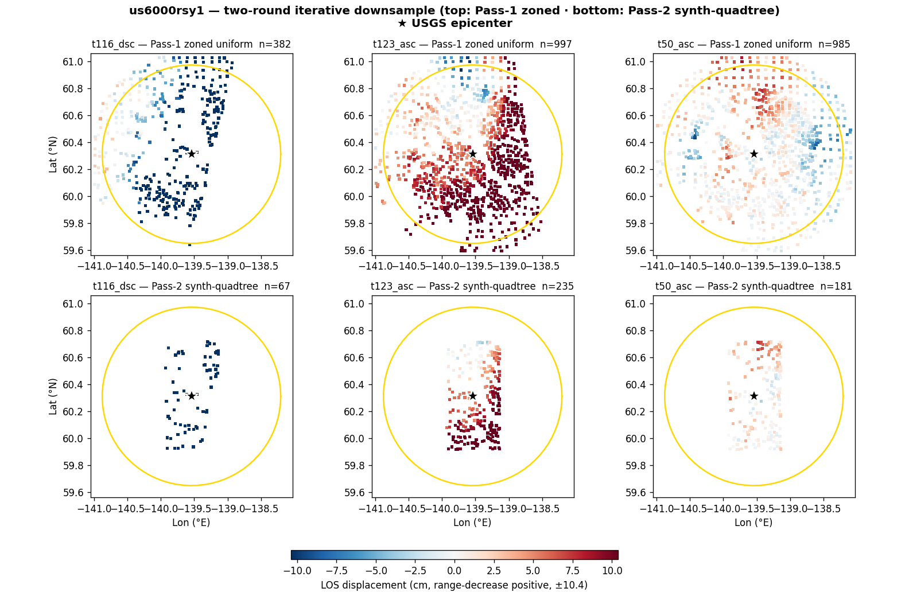
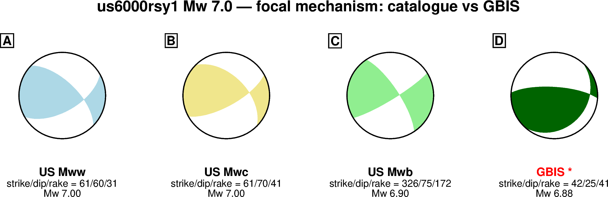
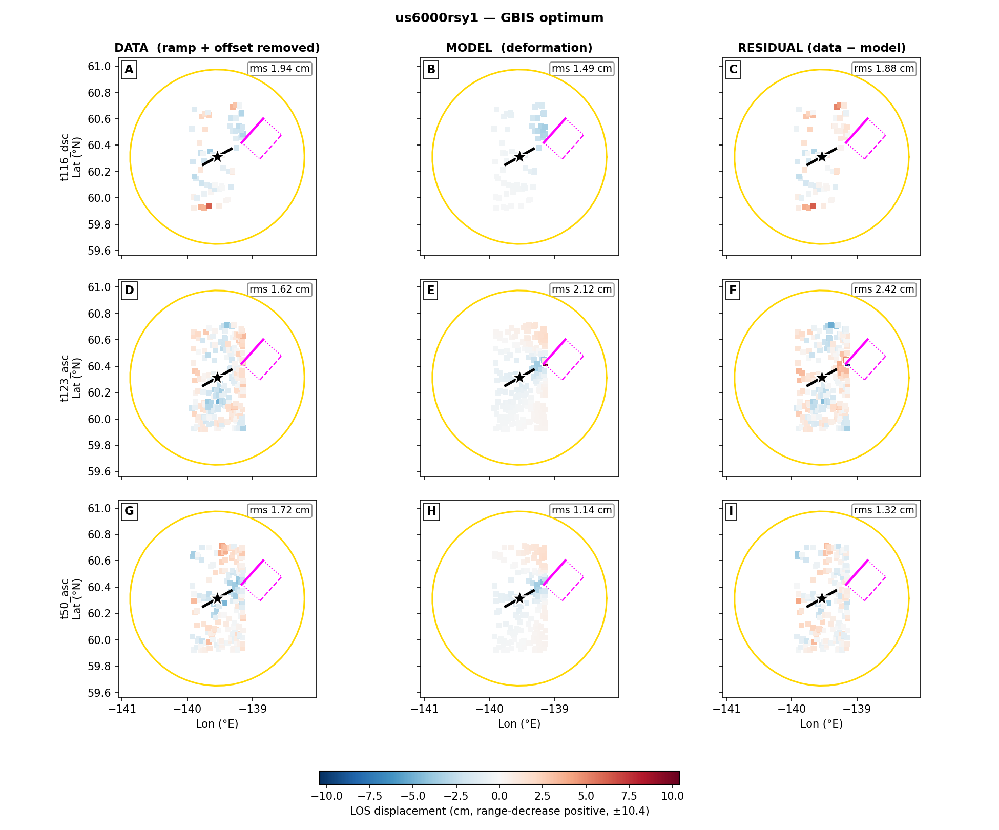
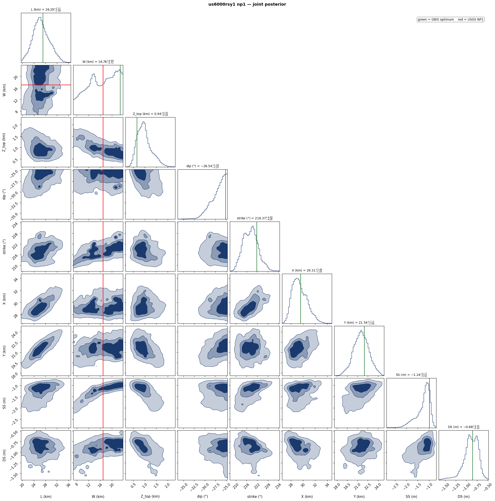
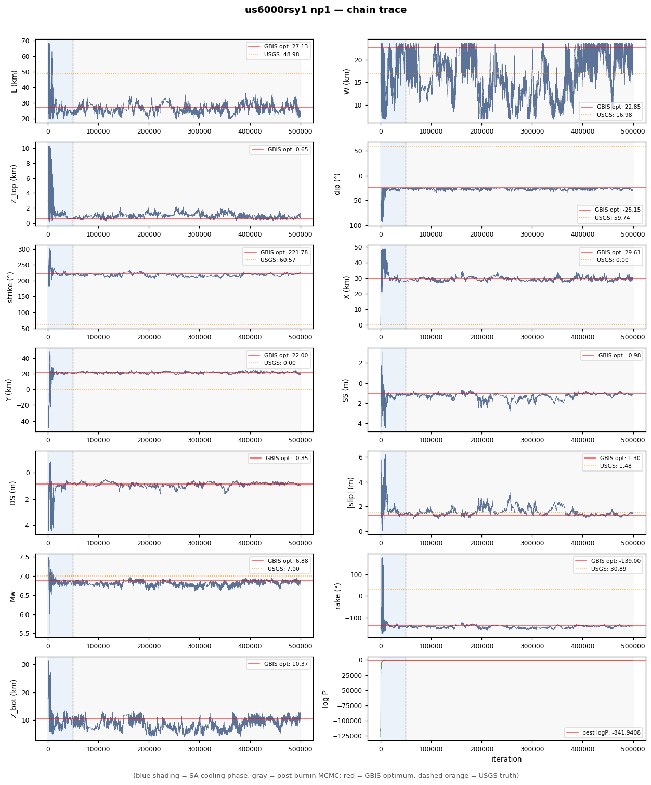

| parameter | start | lower | upper | USGS NP1 / W&C | GBIS optimum |
|---|---|---|---|---|---|
| L (km) | 48.98 | 19.59 | 68.57 | 48.98 | 27.13 |
| W (km) | 16.98 | 6.79 | 23.77 | 16.98 | 22.85 |
| Z_top (km) | 2.98 | 0.10 | 10.32 | 2.98 | 0.65 |
| dip (°) | 59.7 | 24.7 | 90.0 | 59.7 | 25.2 |
| strike (°) | 60.6 | 0.6 | 120.6 | 60.6 | 41.8 |
| X (km) | 0 | -49.0 | 49.0 | 0 | 29.61 |
| Y (km) | 0 | -49.0 | 49.0 | 0 | 22.00 |
| SS (m) | +1.272 | -4.45 | +4.45 | +1.272 | +0.981 |
| DS (m) | +0.761 | -4.45 | +4.45 | +0.761 | +0.853 |
| derived | USGS | GBIS | |||
| |slip| (m) | 1.482 | 1.300 | |||
| rake (°) | 30.9 | 41.0 | |||
| Mw | 7.00 | 6.88 | |||
| Z_bot (km) | 17.65 | 10.37 | |||
| 震源深度 / centroid depth (km) | 10.32 | 5.51 | |||
震源深度对比：USGS = 报告的震源（hypocenter）深度；GBIS = 断层质心深度 (Z_top+Z_bot)/2。
Note: GBIS optimum = single MAP sample reported by GBIS in invResults.model.optimal, NOT a chain median.



Red truth lines = USGS NP1 (W&C scaled). Density contours = 39%, 68%, 95% credible regions.

Blue shading = SA cooling (first 50k iterations). Gray = post-burnin MCMC. Red horizontal = GBIS reported optimum. Dashed orange = USGS NP1 W&C value.